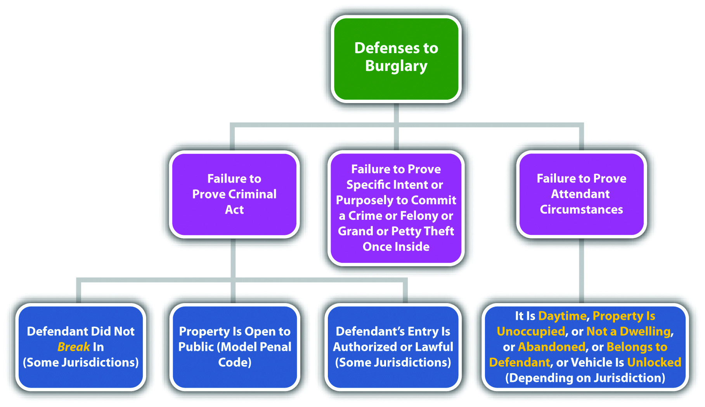
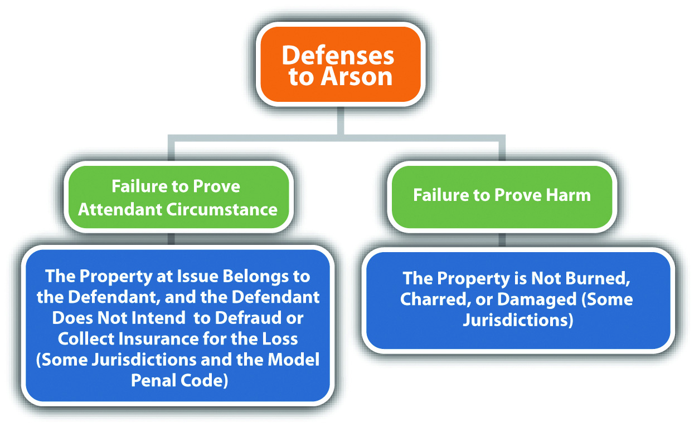
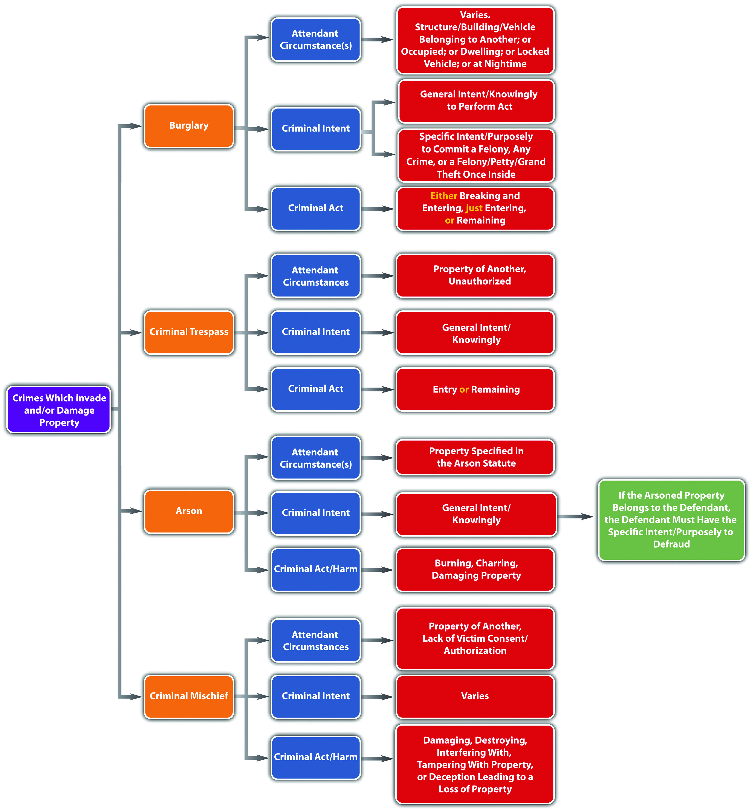

Although burglaryBreaking, entering, or remaining in a structure, building, or vehicle with the intent to commit a crime or felony once inside. is often associated with theft, it is actually an enhanced form of trespassing. At early common law, burglary was the invasion of a man’s castle at nighttime, with a sinister purpose. Modern jurisdictions have done away with the common-law attendant circumstances and criminalize the unlawful entry into almost any structure or vehicle, at any time of day. Burglary has the elements of criminal act, criminal intent, and attendant circumstances, as is explored in Section 11.3.1 "Burglary".
The criminal act element required for burglary varies, depending on the jurisdiction. Many jurisdictions require breaking and entering into the area described in the burglary statute.Mass. Gen. Laws ch. 266 § 14, accessed March 20, 2011, http://law.justia.com/codes/massachusetts/2009/PARTIV/TITLEI/CHAPTER266/Section14.html. Some jurisdictions and the Model Penal Code only require entering (Model Penal Code § 221.1). Other jurisdictions include remaining in the criminal act element.Fla. Stat. Ann. § 810.02(b) (2), http://law.justia.com/codes/florida/2010/TitleXLVI/chapter810/810_02.html.
When criminal breaking is required, generally any physical force used to enter the burglarized area is sufficient—even pushing open a closed door.Commonwealth v. Hallums, 61 Mass. App. Ct. 50 (2004), accessed March 20, 2011, http://scholar.google.com/scholar_case?case=5153605963860010581&q= burglary+%22breaking+requirement%22&hl=en&as_sdt=2,5&as_ylo=2000. Entry is generally partial or complete intrusion of either the defendant, the defendant’s body part, or a tool or instrument.People v. Nible, 200 Cal. App. 3d 838 (1988), accessed March 20, 2011, http://scholar.google.com/scholar_case?case=2854983864809427191&q= burglary+%22partial+entry%22&hl=en&as_sdt=2,5&as_ylo=2000. In some jurisdictions, the entry must be unauthorized,State v. Hall, 3 P.3d 582 (2000), accessed March 20, 2011, http://scholar.google.com/scholar_case?case=14296917791490578337&q= burglary+%22shoplifting%22&hl=en&as_sdt=2,5&as_ylo=2000. while in others, it could be lawful.People v. Nunley, 168 Cal. App. 3d 225 (1985), accessed March 20, 2011, http://scholar.google.com/scholar_case?case=13700546275600703774&q= burglary+%22shoplifting%22&hl=en&as_sdt=2,5&as_ylo=2000. The Model Penal Code makes an exception for “premises…open to the public” or when the defendant is “licensed or privileged to enter” (Model Penal Code § 221.1(1)). Remaining means that the defendant lingers in the burglarized area after an initial lawful or unlawful entry.State v. Allen, 110 P. 3d 849 (2005), accessed March 20, 2011, http://scholar.google.com/scholar_case?case=837948213995751444&q= burglary+%22remaining+means%22&hl=en&as_sdt=2,5&as_ylo=2000.
Jed uses a burglar tool to remove the window screen of a residence. The window is open, so once Jed removes the screen, he places both hands on the sill, and begins to launch himself upward. The occupant of the residence, who was watching Jed from inside, slams the window down on Jed’s hands. Jed has probably committed the criminal act element required for burglary in many jurisdictions. When Jed removed the window screen, he committed a breaking. When Jed placed his hands on the windowsill, his fingers intruded into the residence, which satisfies the entry requirement. Thus Jed may be subject to a prosecution for burglary rather than attempted burglary, even though he never actually damaged or broke the barrier of the residence or managed to gain complete access to the interior.
Depending on the jurisdiction, the criminal intent element required for burglary is typically the general intent or knowingly to commit the criminal act, with the specific intent or purposely to commit a felony,Mass. Gen. Laws ch. 266 § 14, accessed March 20, 2011, http://law.onecle.com/massachusetts/266/14.html. any crime,Connecticut Criminal Jury Instructions §53a-102, accessed March 20, 2011, http://www.jud.ct.gov/ji/criminal/part9/9.2-3.htm. or a felony, grand, or petty theft once inside the burglarized area.Cal. Penal Code § 459, accessed March 20, 2011, http://law.onecle.com/california/penal/459.html. The Model Penal Code describes the criminal intent element as “purpose to commit a crime therein” (Model Penal Code § 221.1(1)).
Hans dares Christian to break into a house in their neighborhood that is reputed to be “haunted.” Christian goes up to the front door of the house, shoves it open, steps inside the front hallway, and then hurriedly dashes back outside. Christian probably does not have the criminal intent element required for burglary in this scenario. Although Christian committed the criminal act of breaking and entering, Christian did not have the intent to commit a crime once inside. Christian’s conduct is probably criminal, but it is most likely a criminal trespass, not burglary. Criminal trespass is discussed in Section 11.3.2 "Criminal Trespass".
Depending on the jurisdiction, burglary often includes the attendant circumstance that the area entered is a structure, building, or vehicle belonging to another.Oklahoma Uniform Jury Instructions No. CR 5-13, accessed March 20, 2011, http://www.okcca.net/online/oujis/oujisrvr.jsp?oc=OUJI-CR%205-13. However, modern jurisdictions have eliminated the requirement that the property belong to anotherCal. Penal Code § 459, accessed March 20, 2011, http://law.onecle.com/california/penal/459.html. and prohibit burglarizing property owned by the defendant, such as a landlord burglarizing a tenant’s apartment. Some jurisdictions require a structure or building to be occupied,Iowa Code § 713.1, accessed March 20, 2011, http://coolice.legis.state.ia.us/cool-ice/default.asp?category=billinfo&service=iowacode&ga=83&input=713. or require it to be a dwelling,Connecticut Criminal Jury Instructions §53a-102, accessed March 20, 2011, http://www.jud.ct.gov/ji/criminal/part9/9.2-3.htm. and require a vehicle to be locked.Cal. Penal Code § 459, accessed March 20, 2011, http://law.onecle.com/california/penal/459.html. A few jurisdictions also retain the common-law attendant circumstance that the burglary take place at nighttime.Mass. Gen. Laws ch. 266 § 15, accessed March 20, 2011, http://law.onecle.com/massachusetts/266/15.html.
Structure or building generally includes a house, room, apartment, shop, barn, or even a tent.Cal. Penal Code § 459, accessed March 20, 2011, http://law.onecle.com/california/penal/459.html. The Model Penal Code expressly excludes abandoned structures or buildings (Model Penal Code § 221.1(1)). A dwelling is a building used for lodging at night.Connecticut Criminal Jury Instructions §53a-102, accessed March 20, 2011, http://www.jud.ct.gov/ji/criminal/part9/9.2-3.htm. Occupied means that the structure or building can be used for business or for lodging at night and does not necessarily require the actual presence of a person or victim when the criminal act takes place.Iowa Code § 702.12, http://search.legis.state.ia.us/nxt/gateway.dll/ic?f=templates&fn=default.htm. Nighttime means the time after sunset and before sunrise when it is too dark to clearly see a defendant’s face.State v. Reavis, 700 S.E.2d 33 (2010), accessed March 20, 2011, http://scholar.google.com/scholar_case?case=10817450688281022337&q= burglary+%22definition+of+nighttime%22&hl=en&as_sdt=2,5&as_ylo=2000.
Susan breaks down a door and steps inside a building with the intent to commit arson, a felony, once inside. If the building is an empty child’s tiny plastic playhouse, the attendant circumstance that the structure be occupied or a dwelling is lacking. If it is twelve noon, the attendant circumstance that the criminal act takes place at nighttime is lacking. If it is pitch black outside and 10 p.m. and the building is Susan’s ex-boyfriend’s residence, then Susan has most likely committed burglary and may be subject to prosecution for and conviction of this offense.
Figure 11.8 Diagram of Defenses to Burglary
Burglary is typically divided into degrees.Iowa Code §§ 713.3, 713.5, 713.6A, accessed March 20, 2011, http://coolice.legis.state.ia.us/cool-ice/default.asp?category=billinfo&service=iowacode&ga=83&input=713. First-degree burglary is generally a serious felony that can serve as the predicate felony for first-degree felony murderCal. Penal Code § 189, accessed March 20, 2011, http://law.onecle.com/california/penal/189.html. and a strike in states that have three strikes statutes.Cal. Penal Code § 1192.7, accessed March 21, 2011, http://law.onecle.com/california/penal/1192.7.html. Factors that can elevate burglary grading are the use or possession of a weapon, the entry into a residence, dwelling, or building where people are present, the commission of burglary at nighttime, or the infliction of injury or death.Mass. Gen. Laws ch. 266 § 14, accessed March 20, 2011, http://law.onecle.com/massachusetts/266/14.html. Second- and third-degree burglary generally are still felonies, although less serious than first-degree burglary.Ala. Code § 13A-7-7, accessed March 20, 2011, http://law.onecle.com/alabama/criminal-code/13A-7-7.html. The Model Penal Code grades burglary as a felony of the second degree if perpetrated in the dwelling of another at night, or if the actor purposely, knowingly, or recklessly inflicts or attempts to inflict bodily injury or is armed with explosives or a deadly weapon. Otherwise, the Model Penal Code grades burglary as a felony of the third degree (Model Penal Code § 221.1(2)).
Keep in mind that a defendant can be prosecuted for burglary even if the felony or crime intended after entry never takes place. In addition, if the defendant actually commits the felony or crime after entry, the defendant can be prosecuted for both burglary and the completed crime without violating the protection against double jeopardy in the Fifth Amendment to the federal Constitution. The Model Penal Code states that a “person may not be convicted both for burglary and for the offense which it was his purpose to commit after the burglarious entry…unless the additional offense constitutes a felony of the first or second degree” (Model Penal Code § 221.1(3)).
As stated previously, criminal trespassUnauthorized entry or remaining in or on another’s property with knowledge that the entry or remaining is unauthorized. is generally charged when one or more of the attendant circumstances of burglary are lacking or when the criminal intent is less heinous. Typically, criminal trespass is an unauthorized (attendant circumstance) entry or remaining (criminal act) into a building, occupied structure, or place as to which notice against trespassing is given, owned by another (attendant circumstance), with general intent or knowingly that the entry was unauthorized (criminal intent).18 Pa. C.S. § 3503, accessed March 20, 2011, http://law.onecle.com/pennsylvania/crimes-and-offenses/00.035.003.000.html. The Model Penal Code states that it is criminal trespass when the defendant “knowing that he is not licensed or privileged to do so…enters or surreptitiously remains in any building or occupied structure…or any place as to which notice against trespass is given” (Model Penal Code § 221.2). Criminal trespass is generally graded as a less serious felony than burglary or is graded as a misdemeanor if the trespass is into a place, rather than a building or occupied structure.18 Pa. C.S. § 3503, accessed March 20, 2011, http://law.onecle.com/pennsylvania/crimes-and-offenses/00.035.003.000.html. The Model Penal Code grades criminal trespass as a misdemeanor if it is committed in a dwelling at night; otherwise, it is graded as a petty misdemeanor or a violation (Model Penal Code § 221.2).
ArsonUnlawful burning of real or personal property. is one of the most destructive crimes in the United States, costing billions of dollars per year in lost or damaged homes, businesses, and real property. Many jurisdictions punish arson as a high-level felony that could merit a punishment of life in prison and mandatory registration requirements similar to serious sex offenses.730 ILCS 148 § 10, accessed March 21, 2011, http://law.onecle.com/illinois/730ilcs148/10.html.
At early common law, arson was primarily a crime against habitation, rather than a crime against property. The elements of arson at common law were the malicious or intentional burning of a dwelling owned by another. Modern statutes criminalize burning almost anything, including the defendant’s own property in many instances.
Arson is a crime that has the elements of criminal act, criminal intent, attendant circumstances, causation, and harm, as is explored in Section 11.3.3 "Arson".
The criminal act element required for arson is typically setting fire to or burning real or personal property specified in the arson statute.Cal. Penal Code § 451, accessed March 21, 2011, http://law.onecle.com/california/penal/451.html. This could include buildings, structures, land, and vehicles.Tex. Penal Code § 28.02, accessed March 22, 2011, http://law.onecle.com/texas/penal/28.02.00.html. Some states define the criminal act element as “damaging” the specified property by fire or explosives.Ga. Code tit. 16 § 16-7-60, accessed March 21, 2011, http://law.onecle.com/georgia/16/16-7-60.html. The Model Penal Code describes the criminal act element as starting a fire or causing an explosion (Model Penal Code § 220.1(1). The type or value of the property the defendant burns or damages can enhance grading. Grading is discussed shortly.
Clark and Manny are bored and decide to light a fire in the woods near their houses. The grass is damp from a recent rain, so the fire does not spread and burns only a small circle of grass. Clark and Manny give up and walk home. Clark and Manny have probably committed the criminal act element required for arson in most jurisdictions. Although a large destructive fire was not set by Clark and Manny, the two did burn or damage real property and start a fire, which satisfies the criminal act requirement in most jurisdictions and under the Model Penal Code.
The criminal intent element required for arson in many jurisdictions is the general intent or knowingly to commit the criminal act.Ga. Code tit. 16 § 16-7-60, http://law.onecle.com/georgia/16/16-7-60.html. Thus the defendant only needs the intent to burn or damage property specified in the arson statute; the defendant does not have to intend to burn a specific structure or personal property, even if that is the end result.People v. Atkins, 25 Cal. 4th 76 (2001), accessed March 22, 2011, http://scholar.google.com/scholar_case?case=959832986872752180&q= %22mens+rea+for+arson%22&hl=en&as_sdt=2,5. The Model Penal Code requires starting a fire or causing an explosion “with the purpose of destroying a building or occupied structure of another; or destroying or damaging any property…to collect insurance for such loss” (Model Penal Code § 220.1(1)).
Review the example with Clark and Manny in Section 11 "Example of Arson Act". Change this example so that Clark and Manny leave the area and a tiny spark from the fire they set begins to ignite. After a few hours, a large and powerful fire starts and burns thousands of acres in the forest. Clark and Manny most likely have the criminal intent element required for arson in many jurisdictions. Although Clark and Manny did not necessarily want to burn thousands of acres of forest land, they did intentionally or knowingly start a fire in the forest, which is all that many modern arson statutes require. Thus even though Clark and Manny did not intend the end result, Clark and Manny are probably subject to prosecution for and conviction of arson for their conduct.
In most jurisdictions, arson must burn a specific type of property. Although this can be interpreted as an attendant circumstance, it is also a function of grading. Thus first-degree arson may focus on arson of a dwelling,Vt. Stat. Ann. tit. 13 § 502, accessed March 22, 2011, http://law.justia.com/codes/vermont/2009/title-13/chapter-11/502. while second-degree arson focuses on arson of other property.Vt. Stat. Ann. tit. 13 § 503, accessed March 22, 2011, http://law.justia.com/codes/vermont/2009/title-13/chapter-11/503. Many jurisdictions do not require the attendant circumstance that property “belongs to another,” and therefore the defendant can burn his or her own property and still be guilty of arson. However, the defendant must generally burn his or her property with the specific intent or purposely to defraud for the burning to constitute arson.Ga. Code tit. 16 § 16-7-62, accessed March 22, 2011, http://law.onecle.com/georgia/16/16-7-62.html. The Model Penal Code requires “destroying or damaging any property, whether his own or another’s, to collect insurance for such loss” (Model Penal Code § 220.1(b)).
Tim decides he wants to get rid of all the reminders of his ex-girlfriend. Tim piles all the photographs, gifts, and clothing items that are connected to his relationship with his ex into his fireplace and burns them. In this scenario, Tim probably does not have the criminal intent element required for arson in most jurisdictions. Although Tim burned or damaged property, the property belongs to Tim, not another. Thus Tim must burn the property with the specific intent or purposely to defraud—most likely an insurance carrier. Tim burned his own property with only general intent or knowingly, so Tim may not be charged with and convicted of arson in most jurisdictions.
The criminal act must be the factual and legal cause of arson harm, which Section 11 "Example of Arson Causation" defines. As stated previously, the defendant does not have to intend to burn a specific structure or personal property, even if that is the end result in many jurisdictions. However, there must be a causation analysis in every arson case because arson is a crime that requires a bad result or harm. Thus the arson harm must be reasonably foreseeable at the time the defendant commits the criminal act with the accompanying criminal intent.
Review the example with Clark and Manny in Section 11 "Example of Arson Intent". In this example, Clark and Manny try to light a fire in the forest, but the grass is too damp, so they give up and leave the area. Hours later, a spark from their fire ignites, burning thousands of acres. Clark and Manny could be the factual and legal cause of this harm in many jurisdictions. Even though the grass was damp and difficult to burn, a trier of fact could find that it is reasonably foreseeable when lighting a fire in the forest that the fire could turn into a massive and destructive blaze. Thus Clark and Manny’s act accompanied by the general intent or knowingly to burn caused significant harm, and Clark and Manny may be subject to prosecution for arson in this case.
The harm element required for arson is burning, charring, or damage to the property specified in the arson statute. Damage could be damage to even a small part,California Criminal Jury Instructions No. 1515, accessed March 22, 2011, http://www.justia.com/criminal/docs/calcrim/1500/1515.html. and in the most extreme cases, even smoke damage without burning or charring is sufficient.Ursulita v. State, 706 S.E.2d 123 (2011), accessed March 22, 2011, http://scholar.google.com/scholar_case?case=8922319356856476558&q= Ursulita+v.+State&hl=en&as_sdt=2,5&as_ylo=2000. The Model Penal Code only requires starting a fire or causing an explosion with the appropriate criminal intent, regardless of whether damage to real or personal property ensues (Model Penal Code § 220.1(1)). Some states follow the Model Penal Code approach.Tex. Penal Code § 28.02, accessed March 22, 2011, http://law.onecle.com/texas/penal/28.02.00.html.
Review the example with Clark and Manny in Section 11 "Example of Arson Act". In this example, Clark and Manny started a fire in the woods that burned a small circle of dead grass. This damage is probably sufficient to constitute the harm for arson in most jurisdictions. Although the value of the damaged forest land is not excessive, excessive damage is not typically a requirement under modern arson statutes—any damage is enough. Thus Clark and Manny may be subject to a prosecution for and conviction of this offense in most jurisdictions.
Figure 11.9 Diagram of Defenses to Arson
Arson is typically divided into degrees,Ga. Code tit. 16 § 16-7-60, accessed March 21, 2011, http://law.onecle.com/georgia/16/16-7-60.html. or simple and aggravated.Cal. Penal Code § 451.5, accessed March 22, 2011, http://law.onecle.com/california/penal/451.5.html. Factors that can elevate grading are the burning or damage of another’s dwelling,Ga. Code tit. 16 § 16-7-60, accessed March 21, 2011, http://law.onecle.com/georgia/16/16-7-60.html. bodily injury or death,Connecticut Criminal Jury Instructions § 53a-111, accessed March 22, 2011, http://www.jud.ct.gov/ji/criminal/part9/9.3-1.htm. extensive property damage, or damage to property of high value.Cal. Penal Code § 451.5, accessed March 21, 2011, http://law.onecle.com/california/penal/451.5.html. As stated previously, arson is a serious felony that can result in a sentence of life in prison and mandatory registration requirements similar to serious sex offenses.730 ILCS § 10, accessed March 21, 2011, http://law.onecle.com/illinois/730ilcs148/10.html. Arson is also generally a strike in states that have three strikes statutesCal. Penal Code § 1192.7, accessed March 21, 2011, http://law.onecle.com/california/penal/1192.7.html. and a predicate felony for first-degree felony murder.Cal. Penal Code § 189, accessed July 15, 2010, http://law.onecle.com/california/penal/189.html (accessed July 15, 2010). Many jurisdictions grade even simple arson or second or third-degree arson as a felony.Cal. Penal Code § 451, accessed March 22, 2011, http://law.onecle.com/california/penal/451.html. The Model Penal Code grades arson as a felony of the second degree (Model Penal Code § 220.1).
Criminal mischiefUnlawful damaging, destroying, or interfering with property. prohibits damaging or destroying property, tampering with property, or deception or threat that leads to a loss of property. Although criminal mischief may be a felony in many jurisdictions, it is generally a less serious felony than arson, either because the defendant inflicts damage to property in a safer manner or because the criminal intent is less heinous. The criminal act element required for criminal mischief is damaging,Ala. Code § 13A-7-21, accessed March 24, 2011, http://law.onecle.com/alabama/criminal-code/13A-7-21.html. destroying, interfering with,Or. Rev. Stat. § 164.365, accessed March 24, 2011, http://law.onecle.com/oregon/164-offenses-against-property/164.365.html. or tampering withAlaska Stat. § 11.46.480, accessed March 24, 2011, http://law.justia.com/codes/alaska/2009/title-11/chapter-11-46/article-04/sec-11-46-480. property. The criminal intent element required for criminal mischief varies, depending on the jurisdiction and the degree of the offense. The criminal intent could be specific intent or purposely, general intent or knowingly, reckless, or negligent.18 Pa.C.S. § 3304, accessed March 24, 2011, http://law.onecle.com/pennsylvania/crimes-and-offenses/00.033.004.000.html. The attendant circumstances required for criminal mischief are typically committing the criminal act against the property of another (or property that is government owned) without victim consent or with no right or authorization.Alaska Stat. § 11.46.475, accessed March 24, 2011, http://law.justia.com/codes/alaska/2009/title-11/chapter-11-46/article-04/sec-11-46-475. The harm element required for criminal mischief is damage, destruction, or interference to property by fire, explosive, flood, or some other method, or interference with electricity, water, oil or gas,Alaska Stat. § 11.46.475, accessed March 24, 2011, http://law.justia.com/codes/alaska/2009/title-11/chapter-11-46/article-04/sec-11-46-475. or loss of property or money by deception such as causing the victim to purchase a worthless product.18 Pa.C.S. § 3304, accessed March 24, 2011, http://law.onecle.com/pennsylvania/crimes-and-offenses/00.033.004.000.html. As stated previously, criminal mischief is often a less serious felony than arson and could also be graded as a gross misdemeanor or misdemeanor.18 Pa.C.S. § 3304, accessed March 24, 2011, http://law.onecle.com/pennsylvania/crimes-and-offenses/00.033.004.000.html. Factors that could elevate grading of criminal mischief are the extent of the property damage and the severity of the defendant’s criminal intent.18 Pa.C.S. § 3304, accessed March 24, 2011, http://law.onecle.com/pennsylvania/crimes-and-offenses/00.033.004.000.html. The Model Penal Code criminalizes criminal mischief when the defendant purposely, recklessly, or negligently damages tangible property of another by fire, explosives, or other dangerous means, purposely or recklessly tampers with tangible property of another so as to endanger person or property, or purposely or recklessly causes another to suffer pecuniary loss by deception or threat. The Model Penal Code grades criminal mischief as a felony of the third degree, misdemeanor, petty misdemeanor, or violation, depending on the extent of the damage or the criminal intent (Model Penal Code § 220.3).
Figure 11.10 Diagram of Crimes That Invade or Damage Property
Answer the following questions. Check your answers using the answer key at the end of the chapter.
WikiLeaks: Should Exposure of Information Be Criminal?
Julian Assange, famous for his computer hacking skills, is the editor in chief of WikiLeaks, a whistleblower website. WikiLeaks has exposed documents and videos detailing the corruption in Kenya, Guantanamo Bay procedures, and the American involvement in the Afghan and Iraq wars, portions of which were classified confidential and secret.Raffi Khatchadourian, “No Secrets,” New Yorker website, accessed March 29, 2011, http://www.newyorker.com/reporting/2010/06/07/100607fa_fact_khatchadourian?printable=true. The New York Times published some of this information.Charlie Savage, “U.S. Prosecutors Study WikiLeaks Prosecution,” New York Times website, accessed March 29, 2011, http://www.nytimes.com/2010/12/08/world/08leak.html?_r=2&partner=rss&emc=rss. Although WikiLeaks did not actually “leak” classified material (some of it was allegedly passed to WikiLeaks by a low-level US Army intelligence analyst), the US Department of Justice has launched a criminal investigation regarding the release, and US prosecutors are reportedly considering charges against Assange.Charlie Savage, “U.S. Prosecutors Study WikiLeaks Prosecution,” New York Times website, accessed March 29, 2011, http://www.nytimes.com/2010/12/08/world/08leak.html?_r=2&partner=rss&emc=rss.
Check your answers using the answer key at the end of the chapter.
60 Minutes Interviews Julian Assange
Julian Assange’s interview with 60 Minutes is shown in the following video: